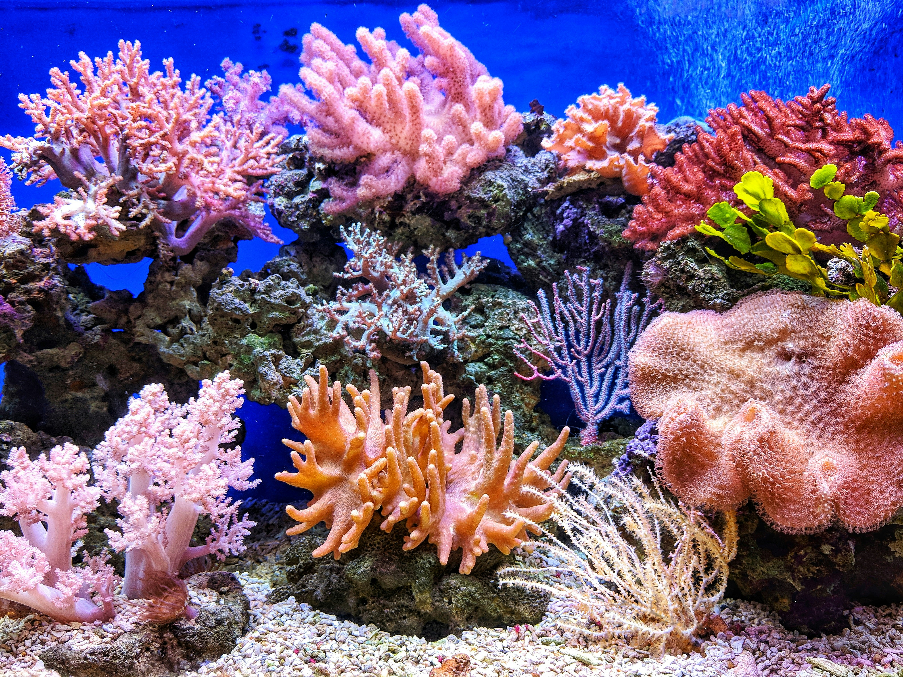
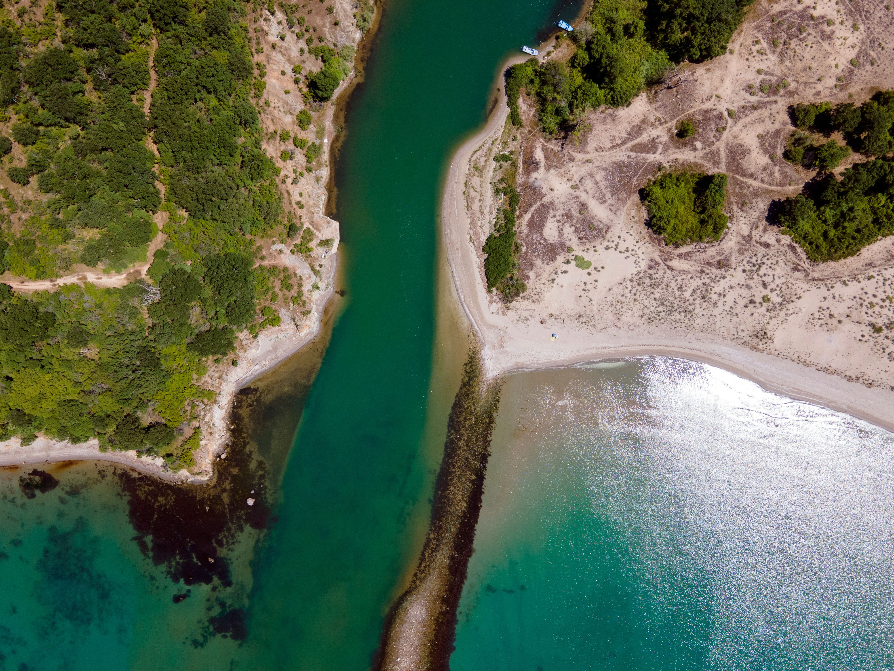
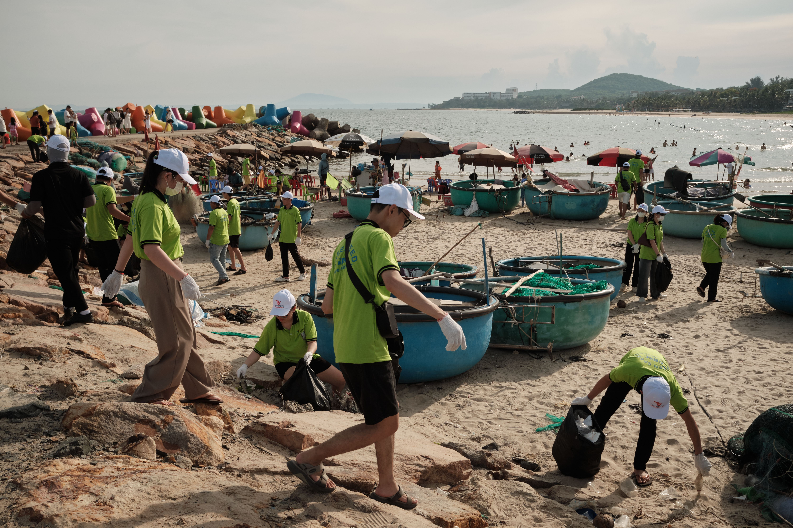
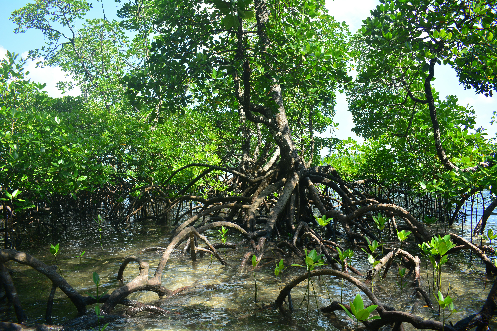

Discover. Protect. Preserve
Together, we can restore mangroves, protect marine life, and preserve our oceans, lakes, rivers, and coastal ecosystems.
Explore MoreGet to Know GreenFinds
Who We Are
GreenFinds is a student-developed environmental awareness website that explores the importance of protecting our oceans, lakes, rivers, and coastal ecosystems.
Explore
Discover the importance of mangroves, oceans, and other aquatic ecosystems, their ecological value, and the environmental challenges they face. Learn more about these environments and why they need protection.
Our Mission
Our mission is to raise awareness about the significance of mangroves, oceans, lakes, rivers, and coastal ecosystems, and to inspire individuals to take part in preserving these vital habitats for future generations.
Take Action
Every action counts. Discover meaningful ways to participate in environmental conservation and help protect our natural ecosystems.
Sustainable Daily Practices
Learn how simple everyday habits, such as reducing plastic use and practicing proper waste management, can help minimize pollution and protect aquatic environments.
Individual Environmental Actions
Discover how individual efforts, such as keeping rivers, lakes, and coastal areas clean, can help prevent pollution and protect natural habitats.
Community Participation
Get involved in environmental organizations, school initiatives, NSTP activities, and community clean-up drives that support environmental conservation.
Did You Know?
Nature is full of surprises. Discover the fascinating secrets of our oceans and the creatures that call them home.

Are Corals Animals or Plants?
Did you know corals are actually animals? Discover how tiny coral polyps build reef ecosystems.
Read More
Why Is the Ocean Salty, but Rivers Are Not?
Discover how rain, rocks, minerals, and flowing rivers contribute to the saltiness of our oceans.
Read More
Can Young People Really Make a Difference in Ocean Conservation?
Read stories of young people who became advocates for protecting their oceans.
Read More
Mangrove Madness: What Are Mangroves and Why Do We Care About Them?
Find out why these coastal trees are important for wildlife and coastal communities.
Read More